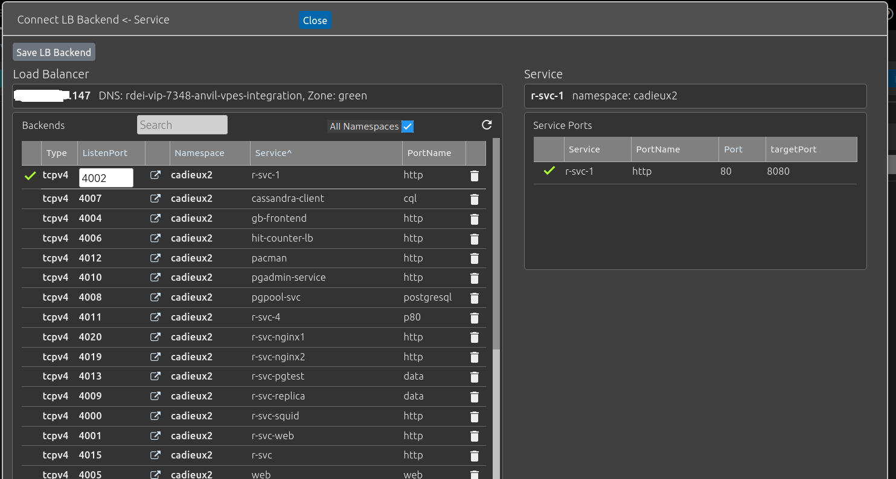
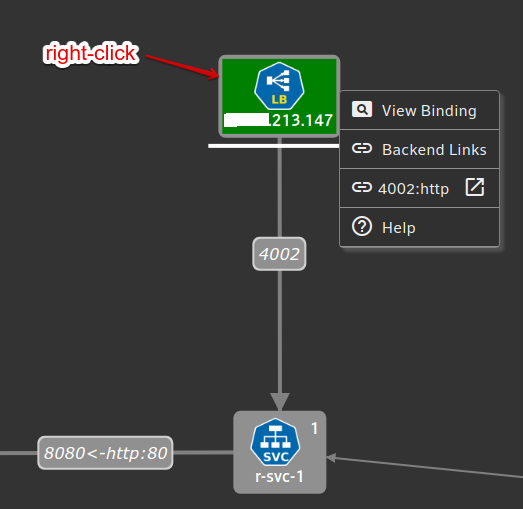
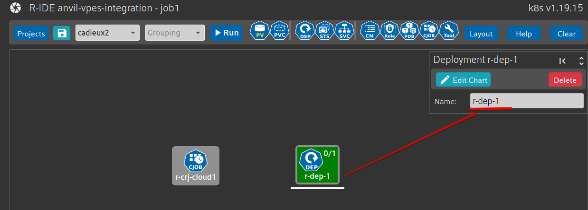
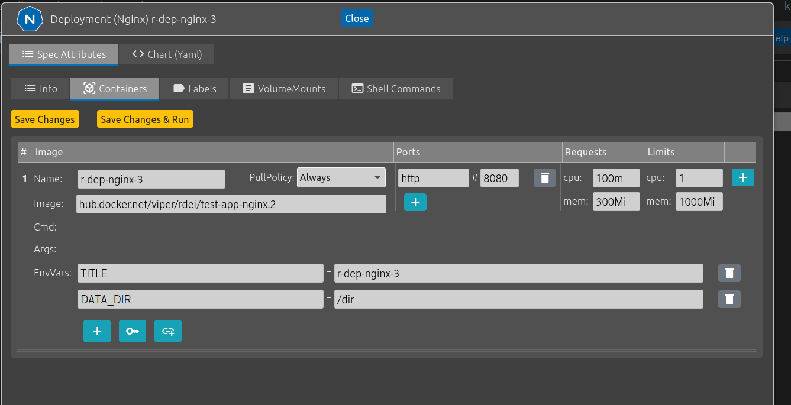
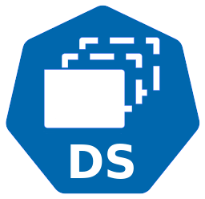
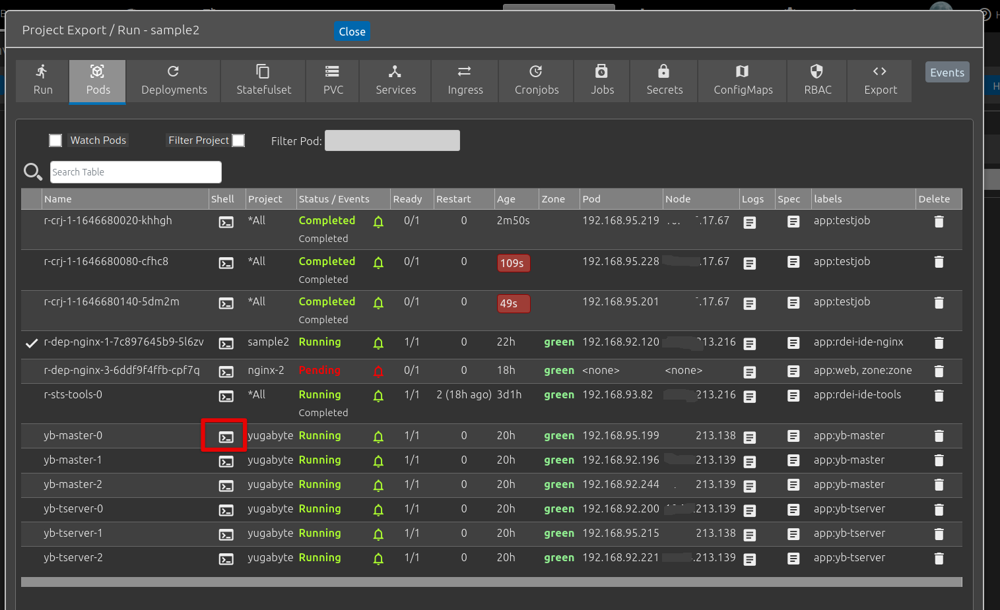
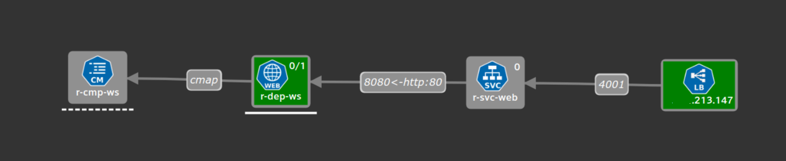
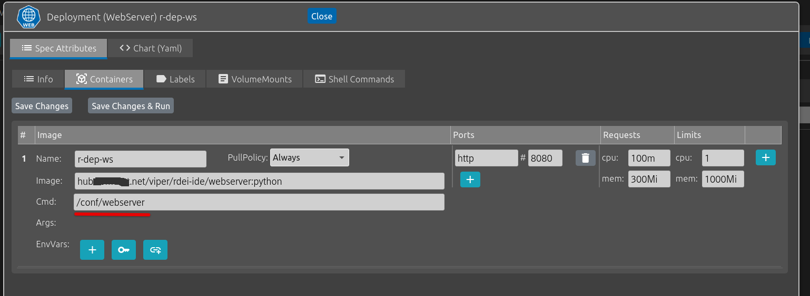
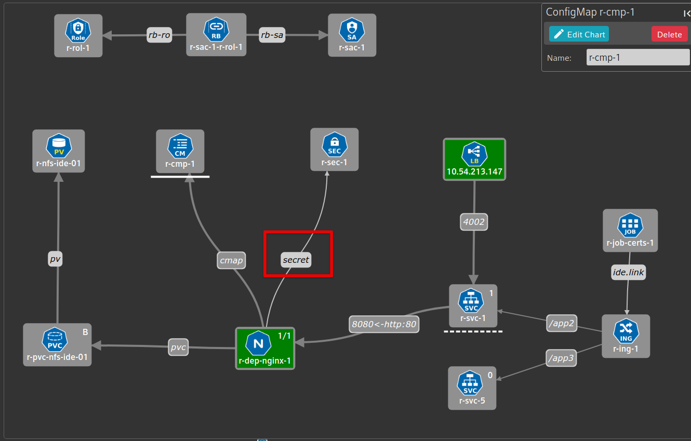

Introduction
The Kubernetes IDE is a visual development environment for Kubernetes and Kubernetes. It can be used to learn kubernetes or to develop prototypes in the Kubernetes environment. It allows to build applications (called projects) by creating, importing and associating kubernetes resources. These projects can be saved and executed in one of your namespaces.
A picture is worth a thousand words - Kubernetes IDE is also useful for documentation. Here is an example of a project using a variety of resources: storage (PersistentVolume, PersistentVolumeClaim), compute (Deployment, ConfigMap, Secret), RBAC (Role, RoleBinding, ServiceAccount) and networking (Service, LoadBalancer, Ingress)
Note: Kubernetes IDE works best on the night background.
Let start with an example. We will create an NGINX server in the form of a kubernetes deployment, associate our deployment with NFS storage (PV/PVC), add a service, add a Load-Balancer, create these resources in our namespace and access our new NGINX web-server using a browser. In this case, I am using a project called sample2 in my own namespace called cadieux2.
Deployment Demo - Nginx
Video: ide-nginx-01.webm
Deployment Steps
1 - Select an NFS PV from the list of available PVs in your cluster. These PVs were previously created using Bindings => NFS in Kubernetes itself. This will create a PV resource and a PVC resource in the IDE. Only the PVC resource will be created since the PV was already created and PVs are cluster-wide resources that only Kubernetes itself can create.
2 - Select NGINX from the Deployment drop-down.
3 - Associate your Deployment with the new PVC just created. This is done by selecting the Nginx deployment and then the PVC and clicking on Connect r-dep-nginx-1 => r-pvc-nfd-ide-01 at the top of the IDE screen.
4 - Select a Service to get stable networking access to the pods of your deployment.
5 - Associate your new service to the Nginx deployment. This is done with the service selector matching the deployment pods labels. More info about services Kubernetes Services . The service ports are also selected.
6 - Select a Kubernetes Load-Balancer from the list of available Load-Balancers. These resources , just like the NFS PVs should already have been created using Bindings => Load Balancer in RDEI. Remember to select a green LB if your deployment is in a green zone.
7 - Associate one Backend (specific Port) of your selected Load-Balancer to your service by selecting the Load-Balancer and the Service and clicking Connect LB => Service at the top of the page. Then select an available port of the Load-Balancer, then click on Save Backends Changes to reconfigure the Load Balancer. This will give you access to your new nginx server from outside the kubernetes cluster.

8 - Save and Run the project. Executing 'Apply' in the Project Export/Run page will do 'kubectl apply' against the specs of your project in your namespace and monitor the status of your pods. Visits the different tabs to see the status of your new resources: pods, service, PVC, deployment.
9 - Now that your Nginx server is running, you can access it by right-clicking the LB in the UI and selecting the correct backend port, in this case 4002:

Nginx is accessible by anybody at Comcast on the LoadBalancer at IP=10.54.213.147 and port 4002:
10 - You can export your project as a helm chart if you need to make changes outside of the Kubernetes IDE:
Projects
Projects are used to organize your applications. There are 2 types of projects : private and public. Public project can be used as templates that you can complete with PVC and Load-Balancer and then saved as private projects associated with your login. Projects can be created from scratch or by importing your own yaml files.
Before you can save your project using Projects => Save-as , a namespace must be selected. Once your project is saved at least one, it can be created in your Kubernetes namespace using Run
As you make changes to the resources of your project, make sure to re-save it using the re-save button
Projects can be exported in the form of a yaml file or helm chart using Run => Export.
Associations between resources
Kubernetes IDE understand the possible relationships between resources. When 2 resources are selected in sequence (clicked) in the UI, the IDE verify if these 2 resources can be associated. For example, a service can be associated with a deployment or a StatefulSet using the pod's labels and the service Selector. When there is an association, the IDE offers a button (top of page) and a dialog to complete the association.
In the IDE, the previous selection is dashed-underscore and the current-selection is underscored. Example:
Resources
Resources like deployment and services can be modified by right-clicking their object in the IDE and selecting 'Edit Chart'.
The resource name can be updated using this field in the top right corner of the UI. Be careful when changing a resource name as it can affect the relationships between resources.

The forms are different for each resource-type but have a few common elements. This is the first tab of the deployment dialog, under Spec Attributes > Info
The Info tab has general information about deployments like 'replicas', node-selector and Service Account.
The Containers tab include most of the information about the containers and images used by the deployment:

The 'Chart (Yaml)' tab is present on all the forms and include the complete kube-spec for this resource in yaml format:
The IDE is bi-directional. This means that changes made directly to the yaml with be reflected in the 'Spec Attributes' forms and changes to the 'Spec Attributes' forms will be reflected in the Chart (Yaml) section. All the forms extract their information and save their information directly in the yaml without affecting the sections of the yaml that are not supported by the forms. So it's possible to add information directly to the yaml that is not known or understood by the IDE.
IMPORTANT: Once a change is done to the resource, don't forget to click 'Save Chart' to save your changes. This will save the changes but will not save the project itself. To make your changes permanent, you still need to re-save your project.
Supported Resources
|
Resource |
Description |
||
|
|
LB/Backend |
External LoadBalancer. Must be created in advance in Kubernetes (bindings => LB). LoadBalancers are connected to services using specific ports (often called backends). |
|
|
|
ClusterRoleBinding |
Cannot be created but will be displayed in the UI when imported. |
|
|
|
ClusterRole |
Cannot be created but will be displayed in the UI when imported |
|
|
|
ConfigMap |
key-value store used for to store configuration used by the pods. each keyname is mounted as a file in the pod file-system. |
|
|
|
CronJob |
Execute a tasks (container) at fixed interval. |
|
|
|
CRD |
CustomResourceDefinition |
Cannot be created but will be displayed in the UI when imported. CRDs are cluster-level resources and Kubernetes users do not have cluster-admin capabilities. |
|
 |
DaemonSet |
Creates a pod on each node of the kubernetes cluster. |
|
|
|
HPA |
HorizontalPodAutoscaler |
Updates replicas count dynamically. There is currently minimum support for HPA in the IDE. |
|
|
Ingress |
Maps http route (host and path) to kubernetes services, Can be used with LoadBalancer and DNS to get external access. |
|
|
|
Job |
Execute a pod until success. Has a different lifecycle than a Pod. |
|
|
|
PV |
PersistentVolume |
Creates storage (NFS, Portworkx) . Must be created in advance in Kubernetes (Bindings => NFS) |
|
|
PVC |
PersistentVolumeClaim |
Request for storage made by a consumer (deployment, statefulset). Pods cannot access PVs directly, they access PVC that are already created or dynamically created. |
|
|
PDB |
PodDisruptionBudget |
S pecifies the number of replicas that an application can tolerate having, relative to how many it is intended to have. |
|
|
Role |
A set of kubernetes RBAC capabilities. |
|
|
|
RoleBinding |
An association between a Role and other objects like Groups or ServiceAccount. |
|
|
|
Secret |
Used to store private information like passwords. |
|
|
|
Service |
Abstraction which defines a logical set of Pods and a policy by which to access them. Provides a stable IP/DNS name to access a set of pods. Can provide load-balancing. |
|
|
|
ServiceAccount |
Provides identity to Pods. Can be associated to a Role to give specific capabilities to a deployment. |
|
|
|
StatefulSet |
A type of deployment used for stateful applications like database where pod and PVC identity must be stable even across pod restarts. Allows VolumeClaim Templates to create different PV/PVC for each pod. Often used with Headless service to get stable DNS access to each pod. Deployment have random pod names but StatefulSet have the same podname every time (Example: statefulset=test, replicas=2, pods=test-0, test-1). |
|

Run
The Run button gives access to the Kubernetes interface for creating , updating and deleting the resources of your project in your Kubernetes namespace:
The running state of the different resources can be reviewed by clicking on the tabs at the top. Resources can be filtered to only see the current project or all projects in your namespace. Logs and Events are available. It is also possible to delete resources using the delete button.
Apply Specs
This function will apply all the resources of your project into the namespace, equivalent to an 'kubectl apply'. It is possible to make changes your project and run apply again - Kubernetes will notice the changes and act appropriately. When the changes are done to properties that are immutable, Kubernetes will return an error.
Restart
Restart will do a 'rollout restart' of the relevant resources.
Delete Specs
Delete all the specs in the project. Optionally, the PVC are not deleted to speed up development.
Delete Resources
Delete specific resources based on type and label.
Pods
For pods that support exec, it is possible to get a bash or ssh session into the pod.

ConfigMap
Video: configmap-01.webm
Doc: Configmap
A ConfigMap is used to store non-confidential data in key-value pairs. The map can be mounted in a pod and is accessible using files in the mounted directory. Here is an example where we add a ConfigMap to our web-server.
1 - Create the ConfigMap, add a key called index.html with some text .
2 - Associate this ConfigMap to the Nginx deployment by clicking the deployment and then the ConfigMap.
3 - in this form, mount the ConfigMap and change the MountPath to '/usr/share/nginx/html/test'. Since /usr/share/nginx/html is the root of this nginx web-server, we are creating a path called /test in the web-server with a new index.html file in it.
4 - Apply the new deployment with the new ConfigMap mounted in /usr/share/nginx/html/test'
5 - Test the web-server at IP:port/test/
ConfigMap Example 2
Let illustrate with an example using the public-project 'webserver-cmap'.
In this example, we have a deployment that includes a python container but the actual code of the web-server, written in python, is in the ConfigMap. This is convenient for prototyping since it's now possible to change the behavior of our web-server simply by changing the content of the ConfigMap. There is no need to create a new docker image: just change the ConfigMap, delete and re-create the ConfigMap resource and then restart the web-server pod.

To do this, we have to create a ConfigMap, store the python code in a ConfigMap key called 'webserver' , then point our python deployment to this configMap with a MountPath=/conf and then make sure that /conf/webserver is executed when the pods start.
Since the content of the ConfigMap is mounted at /conf and each key is mapped to a file in our pods, we get the content of 'webserver' at /conf/webserver in the pod.
The deployment => ConfigMap dialog:
The configuration of our deployment container:

Secrets
Doc: Secrets
Video: secret.webm
Secrets can be used to store private information like passwords. Once a secret is created with key=value information, it can be used in a deployment as an environment variable.
Here is an example of the form for adding keys to a secret. In this case, there are 2 keys: test and password:

Once the secret is created, it can be used in the deployments dialog, under Containers by clicking on and selecting one of the available secrets:
This value of this secret (in this case 'password' from the secret 'r-sec-1' ) is now available to one of the container in your pod.
Associations between deployments and secret in the IDE are shows with links that are labeled 'secret':

ServiceAccount
Doc: configure-service-account
Video: service-account.webm
A service account provides an identity for processes that run in a Pod. So far, our pods need only access to their file-system and the network, but what if our app need to access the Kubernetes API, to get a list of resources for example (pods, services, etc..). Then we need to give special access to our pods. This can be done with ServiceAccounts. This ServiceAccount must be specified in our deployment.
For example, if your app need a list of all the other pods in your namespace, your ServiceAccount will need that capability (pods:list, pods:get). To achieve this, we first create a Role with the correct capabilities:
We then create a ServiceAccount and connect it with the Role. This will automatically create the necessary RoleBinding to associate Role and ServiceAccount.
Then change the ServiceAccount used by our deployment:
We then Save Changes and apply the new specs , we can verify that the new ServiceAccount has the correct kubernetes RBAC in the Run => RBAC page:
Ingress (beta)
Video: ingress.webm
Doc: Ingress
If you have the nginx-ingress-controller installed in your namespace (https://github.comcast.com/k8s-eng/rdei-applications/tree/master/nginx-ingress-proxy), you can use the ingress resource to control access to your services using only one LoadBalancer. The ingress-controller allow to specify different services for different url host and path. This is the form where host and paths can be added:
In this example, the ingress is configured to send traffic from chris.comcast.net/app to service r-svc-5 and chris.comcast.net/app2 to service r-svc-1.
In the IDE, the Ingress resources is created with a job that automatically creates the self-signed certificates needed by the ingress and saves them in a Secret. For applications that are composed of multiple micro-services, each with their own kubernetes Service, ingress is a very convenient way to manage routes.
Ingress can be tested using curl for example:
$ curl -H "Host: chris.comcast.net" https://nginx-controller-service/app2 # send request to r-svc-1, called from inside the cluster$ curl -H "Host: chris.comcast.net" https://load-balancer-ip:port/app2 # send request to r-svc-1, called from outside the cluster, if LB is present# start port-forwarding$ kubectl port-forward service/nginx-controller-service 9090:443 & # port-forwarding $ curl -H "Host: chris.comcast.net" https://localhost:9090/app2 # using port-forwarding outside of cluster. StatefulSet
Doc: statefulset
video: yb-demo.webm
As expected, Statefulset are used for stateful applications like databases where the state and identity of the pods need to stay the same across restarts.
Yugabyte is a good example of a StatefulSet application (https://github.com/yugabyte/yugabyte-db#get-started). It uses Headless Services for DNS access to all the pods and support horizontal scaling using the statefulset replica count.
Yugabyte in Kubernetes IDE
This application is made of 2 Statefulsets: one for the metadata and one for the data itself. The metadata StatefulSet (yb-master) should always have 3 replicas for availability.
The data StatefulSet includes at least 3 pods (called tablets) but can be increased to support larger database. Even with data-replicas=10, the same block of data is only replicated in 3 pods out of the 10 (default configuration).
These 2 StatefulSets are using VolumeClaim Templates to dynamically create Portworx storage for each pod as they are being created. This is done using the Stork scheduler. This dynamic allocation function is only available on namespaces that have Public Storage Classes configured - in this case rdei-database-io-storage:
This same storage-class is used when configuring the VolumeMounts of your StatefulSet:
This example is the IDE public project yugabyte. It also includes a LoadBalancer to access the metadata-UI and the tablets-UI from outside the cluster.
We can see in Run => Services the 2 Headless Services that provides DNS access to each pod. For example the first master pod can be accessed from inside the cluster at yb-master-0.yb-masters .
CronJobs
Doc: CronJobs
Video: cj2.webm
Cronjobs can be used to execute certain tasks as fixed intervals. This is the form:
In this example, the containers associated with this Cronjob will be executed every minute.
Import Specs
It is possible to import Specs into the IDE using Projects => Import Specs and clicking ACCEPT=".YAML" to import yaml files, then Import in IDE to import the specs in your project. Currently , the Kubernetes IDE cannot import helm charts.
When specs are imported, they are modified to work with RDEI:
CPU/MEM requests/limits are added when missing.
Stork is added to statefulset for Storage allocation.
Missing port names are added for readability.
Resources are connected to form the UI graph (best effort).
The IDE will refuse to Run=>Apply the specs if the images are not in hub.comcast.net. The dialog Projects => Image Processing can be used to help the conversion of the images.
Note: The project must be saved before Image Processing can be used.
For example, if one of the imported images is from hub.docker.net , then this page will generate the conversion commands. The user need to cut and paste the command and execute them in his own environment.

Common Issues
|
Issue |
Description |
|
Zone |
Kubernetes uses zones for security. The green zone has access to Comcast network but not the Internet and can use Persistent Storage. Databases for example should be in green. green can access blue and blue can access the Internet. See https://rdei.comcast.net/support/articles/faq |
|
VolumeClaimTemplate |
StatefulSet use VolumeClaimTemplates to dynamically generate Portworx PV and corresponding PVC. This requires that the pods run on nodes where Portworx is present. The spec.template.spec.schedulerName='stork' is used to schedule pods on the correct nodes. This scheduler is automatically selected by the IDE for StatefulSet. VolumeClaimTemplates also need Public Storage Classes allocation in your Kubernetes namepace. See https://stage.rdei.comcast.net/support/articles/creating-public-storage |